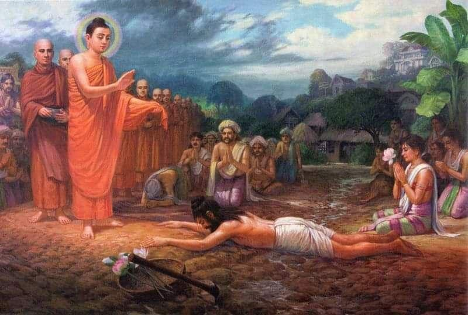

Первая картинка является своеобразным приквелом, действия происходят задолго до того когда родился Сиддхартха, тогда, когда человек по имени Сумедха вознамерился стать Бодхисаттвой т.е тем кто за невообразимо большой период времени совершенствует в себе качества позволяющие в последнем рождение стать Буддой который самостоятельно пробуждается в четыре истины и непревзойденно обучает им людей и дэвов.
На рисунке изображены Будда Дипанкара в сопровождении четырех сотен тысяч Архатов, направляющихся в город Рамма по приглашению горожан для принятия даров, а также брахман Сумедха дающий обеты бодхисаттвы упав ниц перед Буддой.
Будда Дипанкара (букв. Тот, кто делает масленые лампы, или Дающий свет лампы) – Татхагатта живший четыре неизмеримых кальпы и сто тысяч кальп назад. Первый по счёту Будда из двадцати четырёх Татхагат прошлого, о которых рассказывал своим ученикам Будда Шакьямуни. Во времена Будды Дипанкары будущий Будда Шакьямуни перевоплотился как брахман Сумедха. Однажды он задумался о превратностях перевоплощений, о страданиях, о старости и болезнях.
Вот как это его раздумье описывается в буддийской хронике:
В Один из дней он поднялся на верхнюю террасу своего особняка и, сидя в одиночестве, такие мысли возникли в нем:
«Несчастно рождение в новом существовании; так же и разрушение тела; несчастно также и умереть в заблуждении, угнетённым и подавленным старостью. Подверженный рождению, старости и болезням, я буду искать Ниббану, где исчезнут старость, смерть и страх.
Было бы чудесно, если бы я мог оставить это мое тело, не обращая на него никакого внимания, так как оно полно гнилостных веществ, таких как моча, экскременты, гной, кровь, желчь, слизь, слюна, и т. д.
Несомненно, должен быть путь, ведущий к прекращению всего этого, путь к Ниббане. Иначе и быть не может. Я буду искать этот путь, чтобы освободиться от оков существования.
Например, как когда есть страдание (дуккха), в этом мире есть и счастье (сукха); также в этом случае, когда существует круг существований, который является возникновением страдания, должна также быть Ниббана, которая есть прекращение страдания.
Точно так же, как когда есть жара, то есть и холод; даже в этом случае, когда есть три огня страстное желание, отвращение и заблуждение, должна быть также Ниббана, то есть угасание этих трех огней.
После того как эти мысли пришли ему в голову, он продолжал глубоко размышлять:
«Например, человек, упавший в яму с нечистотами или запачканный грязью, видит издалека чистый пруд, украшенный пятью видами лотосов. Если, несмотря на то, что он его увидел, он не найдет правильного пути к пруду, то это вина не пруда, а самого человека. Точно так же существует большой пруд бессмертной Ниббаны, где можно смыть свои умственные загрязнения, и если человек не ищет этот большой пруд Ниббаны, то это не вина Ниббаны.
Опять, если человек окружен врагами и не пытается бежать, хотя для него есть путь бегства, то это не вина пути. Точно так же, если человек, осажденный врагами в форме ментальных загрязнений, не желает бежать, хотя так ясно существует большая дорога к золотому городу Ниббане, где человек защищен от врагов в форме умственных загрязнений, это не вина той большой дороги.
Опять, если человек заболел болезнью и не захотел лечиться, хотя есть хороший врач, врач не виноват. Точно так же, если кто-то мучительно страдает от болезней умственных загрязнений и не ищет мастера для их лечения, хотя существует тот, кто опытен в устранении этих умственных загрязнений, то мастер не виноват».
Размышляя об отречении в свете этих сравнений, мудрому Сумедхе снова пришла в голову мысль: «Накопив такое большое богатство, мой отец, дедушка и другие мои родственники из семи поколений не смогли воспользоваться даже одной монетой, когда они скончались. Но мне нужно найти способ взять это богатство с собой в дорогу к Ниббану».
Тут стоит прокомментировать последнее предложение:
Он, конечно, не мог унести свое богатство с собой. Но здесь Сумедха имеет в виду благотворные результаты, которые могут быть получены в результате его благих деяний, связанных с щедрым дарением.
Затем он подошел к королю и сказал: «Ваше Величество, поскольку мой разум одержим великим страхом перед опасностями и страданиями, проистекающими из таких вещей, как рождение, старость и т. д. я собираюсь оставить домашнюю жизнь и стать отшельником. У меня есть богатство на многие миллионы. Пожалуйста, возьмите их».
«Мне не нужно ваше богатство молодой человек. Но Вы можете распорядиться им как пожелаете», — ответил король. «Хорошо, ваше величество», — сказал мудрый Сумедха и под бой могучего барабана провозгласил это по всему городу Амаравати: «Пусть те, кому нужны мои богатства, придут и заберут их». И он раздал свое богатство, раздавая великую милостыню, всем, без различия статуса и независимо от того, являются ли они нищими или нет.
Совершив таким образом великий поступок щедрости, мудрый Сумедха отрекся от мира.
Как написано в Махавамсе, по поручению самого Сакки (повелителя Дэвов) было подготовлено для него подходящее для практики жилище.
Это жилище могло способствовать успокоению ума, что могло привести к проникновению (випассана) в истинную природу вещей, их непостоянство, страдание и безличность.
Став аскетом Сумедхо проходя назад и вперед по дорожке длиной в 60 локтей, оглядел себя в своем новом одеянии отшельника и возликовал от мысли:
«Желание моего сердца полностью исполнилось. Действительно, прекрасна моя подвижническая жизнь. Аскетическая жизнь восхвалялась всеми мудрецами, такими как Будды и Пачека Будды. Оковы семейной жизни были оставлены. Я благополучно вышел из сферы мирских удовольствий. Я вступил в благородную жизнь аскета. Я буду культивировать и практиковать святую жизнь. И Я постараюсь получить пользу от этих практик».
Вечером Сумедхо вошел в хижину и, лежа на деревянной доске рядом с тростниковой кушеткой, использовал одежду вместо одеяла и заснул. Проснувшись рано утром, он опять размышлял о причинах и обстоятельствах своего отречения:
«Увидев недостатки семейной жизни и отказавшись от несравненного богатства и неограниченных средств и свиты, я вошел в лес и сделался аскетом, желая искать заслуг, которые освободят меня от сетей чувственности. С сегодняшнего дня я не должен быть небрежным.
И видимо в этот момент, возможно он обдумал три категории неправильных мыслей.
Есть три категории неправильных мыслей, а именно:
мысли, основанные на страстном желании (кама-витакка), направленные на чувственные удовольствия;
мысль, основанная на недоброжелательности (вьяпада-витакка), которая направлена на убийство, разрушение;
мысль, основанная на жестокости (вихимса-витакка), направленная на причинение вреда и насилия другим живым существам.
Эти мысли можно сравнить с дикими мухами, которые питаются теми, кто небрежен и отказывается от практики умственного отстранения от омрачений и физического отстранения от чувственных удовольствий.
Как вы возможно уже догадались и вспомнили, эти три вида не благого мышления являются противопоставлением трем видам благого мышления «сама санкаппа» являющееся вторым пунктом Благородного Восьмеричного пути, напомню их все:
Самма дитхи - правильное воззрение
Самма санкаппа – правильное мышление (или как часто еще переводят правильное устремление)
Самма вача – правильная речь
Самма камманта –правильное действие
Самма аджива – правильные средства к существованию
Самма вайама – правильное усилие
Самма сати – правильное памятование
Самма самдхи – правильное сосредоточение
Пока не будем подробно останавливаться на них, а продолжим рассказ.
Думая так, Сумедхо сказал себе, сейчас для меня настало время полностью посвятить себя практике не привязанности (павивека).
Правда, видя недостатки семейной жизни, которые препятствуют, мешают и вредят серьезным практикам, я отрекся от мира. Эта хижина из листьев действительно восхитительна. Эта прекрасно выровненная земля ярко-желтого цвета, как спелый плод баел. Стены серебристо-белые. Листья на крыше красивого красного цвета, как голубиная лапка. Диван изготовлен из тростника, украшен узорами пестрого покрывала. Жилище очень удобное для проживания. Не думаю, что роскошь моего прежнего мирского жилища сможет превзойти комфорт, обеспечиваемый этой хижиной».
Размышляя таким образом, он распознал восемь недостатков хижины из листьев и десять преимуществ подножия дерева. Следовательно, в тот же день он покинул хижину и подошел к подножию деревьев.
На следующее утро он вошел в соседнюю деревню за подаянием. Жители деревни приложили огромные усилия, чтобы предложить ему вкусную еду. Закончив трапезу, он вернулся в лесу и сел, думая:
«Я стал подвижником не потому, что мне не хватает пищи. Вкусная еда, деликатесы, как правило, усиливают гордость и высокомерие. Нет конца бедам, возникающим из-за необходимости поддерживать жизнь такой пищей. Было бы хорошо, если бы я воздерживался от пищи, приготовленной из культурных зерен, и питался только плодами, падающими с деревьев».
С этого момента он питался только плодами, падавшими с деревьев. Совсем не ложась, он прилагал напряженные усилия, чтобы непрерывно медитировать только в трех позах: сидении, стоянии и ходьбе, и в конце семи дней он достиг восьми достижений (самапатти или джханические достижения) и пяти сверх знаний (абхиння – сверх естественных сил).
В этот период в мире стала распространяться слава о Победителе в Истине, Будде Дипанкаре.
Будда Дипанкара пребывал в городе Раммавати в монастыре Судассана.
Но Сумедха не знал об этих замечательных событиях, поскольку тогда он был полностью поглощен блаженством погружения (джханы).
Тем временем, жители Раммавати тщательно готовились к великой раздаче милостыни (асадиша-маха-дана). Укрошали и приводили в порядок городские улицы.
Когда в городе были сделаны все необходимые приготовления, горожане занялись ремонтом дороги, по которой Будда должен был войти в город. Они засыпали землей ямы и трещины, образовавшиеся в результате наводнений, и выравнивали неровную илистую почву. Дорогу также посыпали жемчужно-белым песком и усыпали цветами и рисовыми хлопьями.
В это время отшельник Сумедха поднялся в воздух из своей обители и, путешествуя по воздуху, увидел жителей Раммавати, весело занимающихся ремонтом дорог. Задаваясь вопросом, что происходит внизу, он завис в подходящем месте и пока люди в крайнем изумлении наблюдали как он висит в воздухе он спросил:
«Вы с таким удовольствием и энтузиазмом ремонтируете дорогу. Для кого вы её ремонтируете?»
Тогда люди, немного придя в себя ответили:
«Почтенный Сумедха, в этом мире появился несравненный Будда Дипанкара, победивший пять видов смерти (мара). Он верховный господин всего мира. Мы ремонтируем дорогу для его визита».
Из этого разговора можно отметить, что Будда Дипанкара появился спустя много времени после того, как Сумедха достиг джхан и сверх знаний. Сумедхе не было известно о зачатии Дипанкары, его рождении, становлении Буддой и его первой проповеди, потому что он бродил только по лесам и небу, полностью поглощенный блаженством погружений, не интересующиеся никакими событиями человеческого мира. И только когда он путешествовал по воздуху и увидел, что жители Раммавати ремонтируют и чистят дороги, он спустился на землю, чтобы спросить, что происходит. Это говорит, что Сумедхе в то время было около нескольких тысяч лет, поскольку продолжительность жизни, когда появился Будда Дипанкара, составляла 100 000 лет.
Сумедха исполнился радости, услышав слово «Будда», произнесенное жителями Раммавати. Он испытал настолько огромное душевное счастье, что бес конца повторял слово «Будда», так как не мог сдержать возникшую в нем сильную радость.
Стоя на том месте, куда он спустился, Сумедха был полон счастья, а также движим (самвегой – особым чувством срочности и неотложности). Он думал так: «Я посею превосходные семена заслуг в плодородную почву для взращивания добрых дел благодаря Будде Дипанкаре. Действительно, редко и трудно стать свидетелем появления Будды. Этот счастливый момент настал. И я не позволю чтобы такая редкая удача прошла мимо меня».
Подумав так, он обратился к людям: «Люди, если вы готовите дорогу к визиту Будды, выделите и мне участок дороги. Я тоже хотел бы принять участие в этой работе». – «Хорошо», – сказали люди, и, поскольку они только что были свидетелями его полета в небе и думая, что он скорее всего человек обладающий огромными сверхспособностями, они выделили ему большой, заболоченный и очень неровный участок земли, который было бы трудно исправить.
Тогда Сумедха, с радостью в сердце, подумал о 9 качествах Будды:
Будда – это тот, кто достоин эпитета «Араха», потому что полностью оставил все омрачения вместе с присущими им теми или иными склонностями. Во всех его телесных поступках, речи и умственной деятельности всегда присутствует осознанность, проявляясь вместе с мудростью. Его нравственное поведение безупречно, он полностью оставил алчность, отвращение, смущение и замешательство, самомнение, тщеславие и неверные взгляды.
Он Саммасамбуддха совершенный, самостоятельно Пробудившийся. Тот, кто наделен знанием всех дхамм (sabbaññuta nāna).
Он тот, кто наделён защитными силами (vijjãcarana sampanna) знанием, видение и сверхсилами. И безупречным поведением.
Сострадание Будды ко всем существам безгранично. Оком мудрости он всегда ищет тех, кто должен освободиться от круга повторных рождений (samsãra) и тех, кто имеет потенциал для этого. Являясь самым усердным и трудолюбивым из всех в этом мире. Поэтому он известен как «Сугато» (Sugato) Хорошо идущий. Он всегда приходит неся с собой только благо и освобождение от страданий.
Он знает всё о мире людей, дэвов, брахм и, что там движет существами и определяет их помыслы и устремления. Его проницательность непревзойдённа, он знает всё о степени их зрелости и незрелости, природных и интеллектуальных способностях, привычках, предрасположенностях и желаниях. Он непревзойденный в знании мира существ, пространственных миров и умов существ. Поэтому его качество (Lokavidū - знаток миров) всем известно.
Он наделен качеством (Anuttaro purisa dammasãrathi), потому что он непревзойденный в усмирении и укрощении тех, кто в этом нуждается.
Он (Satthadeva manussãnam) непревзойденный «Учитель людей и дэвов.
Руководствуясь Четырьмя благородными истинами и личной практикой Дхаммы, множество людей осуществило Путь (Magga) и Плод (Phala). Будда открывает людям Дхамму, давая наставления в отношении любых трудностей и страданий. Поэтому люди говорят с чувством почтения и уважения так: «Он действительно благородная личность, тот, кто помог людям узнать Дхамму, которую они прежде не знали, он поистине Будда!»
Оставив жизнь царевича, бодхисатта в течение шести лет занимался аскетическими практиками, а затем при помощи Срединного пути он в итоге достиг Пробуждения. Будда наделён тридцатью двумя признаками благородной личности и восьмьюдесятью малыми признаками. Внешность его очень привлекательная и необычная, и любой, кто видит его, ощущает доверие и вдохновение, выражая ему почтение. Все мудрые люди, будь они правителями, брахманами или монахами выражают почтение Будде. По этим причинам он известен как – Бхагава (Bhagavā - самый почитаемый).
Размышляя так, Сумедхо решил: «Я могу починить дорогу при помощи своих сверх способностей, чтобы она выглядела приятно. Но если я это сделаю, люди вокруг меня могут не оценить это высоко, потому что это будет сделано легко, и очень быстро. Сегодня я должен выполнять свои обязанности собственным физическим трудом». Приняв такое решение, он засыпал болото землей, которую принес издалека.
Прежде чем Сумедха успел завершить порученную ему работу, на дороге появился Будда Дипанкара с 400 000 Архатами, каждый из которых был наделен шестью сверх знаниями (abhiññā).
Когда Будда Дипанкара с Арахатами прошел по дороге, дэвы, и люди приветствовали их барабанным боем и песнями.
В то время люди были видны дэвам, а дэвы были видны людям. Все эти существа, божественные и человеческие, следовали за Буддой, некоторые поднимали руки в поклонении, а другие играли на своих музыкальных инструментах.
Сумедха смотрел, не моргая, на внешность Будды, которая была наделена 32 признаками Великого Человека и дополнительно украшена 80 второстепенными признаками. Он был свидетелем великолепия Будды, с яркой аурой, всегда окружавшей его, и шестью сияниями, исходящими из его тела, вспыхивающими, как молнии, на сапфирово-голубом небе.
Тогда он решил так: «Сегодня мне следует отказаться от своей жизни в присутствии Будды. Пусть он не топчется в грязи из-за того что я не успел закончить ремонт дороги и не страдает от дискомфорта. Пусть Будда и все его 400 000 Арахатов наступят на мою спину и пройдут так же, как они ходили бы по доскам моста. Использование моего тела в качестве тропы для Будды и его Арахатов определенно принесет мне долгосрочное благополучие и счастье».
Приняв такое решение, он распустил узел волос, расстелил на мутном болоте циновку из шкур и волокнистую мантию, а затем распростерся на них, словно мост, построенный из деревянных досок рубинового цвета.
Так у Сумедхи, павшего ниц, возникло стремление стать Буддой. И его ум сосредоточился на этом.
Пока Сумедха лежал с сосредоточенным намерением стать Буддой, молодая девушка, брамин по имени Сумитта присоединилась к людям, собравшимся в присутствии Будды. В честь Будды она принесла восемь цветков лотоса. Когда она оказалась посреди толпы и как только ее взгляд упал на Сумедху, ее охватила внезапная великая привязанность к нему. Хотя она хотела преподнести ему несколько подарков, у нее не было ничего, кроме восьми цветков лотоса. Затем она сказала ему:
«Почтенный отшельник, я даю тебе пять цветков лотоса, чтобы ты сам предложил их Будде. Остальные три цветка — для моего собственного подношения». Затем она вручила Сумедхе пять цветков лотоса и выразила свое желание, сказав: «Почтенный отшельник, на протяжении всего периода, пока ты достигаешь совершенства, чтобы стать Буддой, пусть я буду твоим спутником, который разделит твою жизнь».
Сумедха принял цветы лотоса от юной Сумитты и среди толпы предложил их Будде Дипанкаре, который подошёл к нему, и вознамерился к достижению Совершенного Самопробуждения.
Наблюдая за сценой, произошедшей между Сумедхой и Сумиттой, Будда сделал предсказание среди толпы, таким образом, как описывается в (Yasodhara-therī-apadana, Ти-ап 50):
«Сумедха, эта девушка Сумитта, будет твоим спутником, она разделит с тобой свою жизнь, помогая тебе с равным усердием и в твоем становлении Буддой. Она будет радовать вас каждой своей мыслью, словом и делом. Она будет красива на вид, приятна на словах способных утешать сердце. Когда вы станете Буддой, в вашем последнем существовании она станет ученицей, которая получит ваше духовное наследие Пробуждения, и будет обладать сверхъестественными психическими способностями».
Среди собравшихся людей, при созерцании великолепия Будды у всех до единого возникало желание стать Буддой. Но хотя они стремились к состоянию будды, ни один из них не был достоин стать Буддой. Но, в отличие от этого множества людей, Сумедха был полностью наделен всем необходимым для того, чтобы стать Буддой. Фактически, он был склонен стать Буддой, поскольку был наделен восемью факторами, необходимыми для получения пророчества. Вот эти восемь факторов:
1. Быть человеком.
2. Быть мужчиной.
3. Выполнить все предварительные практики и условия, необходимые для дальнейшей реализации Пробуждения.
4. Встреча с живым Буддой.
5. Быть аскетом, верующим в закон (камма).
6. Уметь достигать (джханы) и обладать 5 сверх знаниями (abhiññā).
7. Быть готовым отдать свою жизнь ради благополучия Будды.
Если бы Будда Дипанкара и его 400 000 архатов шли по спине распростертого Сумедхи, как если бы они переходили мост, он бы не выжил. Прекрасно понимая это, Сумедха без колебаний и мужественно приготовился оказать служение Будде. Такое действие называется главным актом заслуг (адхикара-кусала).
8. Интенсивное благотворное стремление стать Буддой. Даже если бы вся вселенная была заполнена раскаленными докрасна углями и острыми копьями, он, не колеблясь, прошел бы сквозь них, чтобы стать Буддой.
Зная, что Сумедха наделен этими необходимыми качествами, Будда Дипанкара отправился к Сумедхе и, стоя у изголовья его распростёртого тела, применил свою сверхъестественную психическую силу видения будущего, чтобы узнать, осуществится ли стремление Сумедхи стать Буддой. Будда произнес пророчество в девяти стихах, начинающееся такими словами: Пассатха имам тапасам джатилам уггатапанам (Бв 2.61-69):
«Монахи, вот этот аскет со спутанными волосами, строгих аскетических практик! Отшельник Сумедха станет Пробужденным среди Брахм, Дэвов и людей через бесчисленные эоны, а точнее, через четыре неизмеримых периода и 100 000 эонов с настоящего момента.
На пороге своего становления Буддой этот Сумедха откажется от мира, оставив позади восхитительный город Капилаваттху; затем он посвятит себя медитации и выполнению суровых аскетических практик (дуккара-чарийа).
Находясь под баньяновым деревом Аджапала, он примет подношение молочного риса и отправится к реке Неранджара.
Он будет есть молочный рис на берегу реки и затем приблизиться к дереву Бодхи по тропе, хорошо приготовленной Дэвами.
Достигнув дерева Бодхи, которое станет местом достижения Пробуждения, он обойдет его по часовой стрелке; он повернет с юга на запад, с запада на север, а затем с севера на восток и сядет с намерением стать Высшим Пробужденным, и никто не сможет превзойти его. Затем, усевшись у подножия дерева Бодхи, он обретет проницательное знание четырех благородных истин.
Мать этого Будды будет носить имя Майя Деви; отца будут звать Суддходана. Будда будет носить имя Готама.
Парой его главных учеников будут Колита и Упатисса, которые будут свободны от (асав) и похоти, и у которых спокойный ум и глубокая умственная концентрация. Монах по имени Ананда будет прислуживать этому Будде в качестве помощника.
Кхема и Уппалаванна, свободные от загрязнений ума и привязанностей, обладающие спокойным умом и глубокой умственной концентрацией, станут двумя главными ученицами. Дерево (assattha) будет деревом Бодхи Будды, под которым он достигнет Пробуждения.
Читта и Хатталавака будут выдающимися мирянами, служащими Будде. Точно так же Уттара и Нандамата будут лучшими мирянками».
Услышав пророчество Будды Дипанкары, дэвы и люди воскликнули с радостью: «Говорят, что этот отшельник Сумедха — поистине встал на путь Бодхисатты.» Дэвы и Брахмы, пришедшие из 10-тысячного мировой системы вместе с людьми, сложили руки в поклонении. Они также выразили свои пожелания (Бв. 2.73-75):
«Хотя сейчас нам не удалось применить на практике учение Будды Дипанкары, мы встретили этого благородного отшельника, который станет Буддой. Пусть. Когда это случится, мы будем стремиться достичь высшего знания Дхаммы.
Например, есть те, кто пытается переправиться через реку, но не может добраться до назначенного места на другом берегу, так как их уносит течением реки. Однако им удается зацепиться за место где-нибудь ниже по реке и оттуда переправиться к месту назначения.
Точно так же, хотя мы пока и не можем воспользоваться учением Будды Дипанкары, мы встретили этого благородного отшельника, которому суждено стать Буддой в будущем, и тогда мы достигнем путей и плодов».
После, Будда Дипанкара, сделав таким образом предсказание и удостоенный восьми пригоршней цветов, ушел, сделав шаг правой ногой рядом с Сумедхой.
С
того места, где Будда произнес пророчество,
также удалились 400 000 Архатов, оставив
Сумедху справа от себя, почтив его
цветами и благовониями. Также люди, наги
и гандхаббы ушли оттуда, выразив почтение
Сумедхе и почтив его цветами иблаговониями.
Когда Будда Дипанкара, вожатый трех миров, и 400 000 архатов скрылись из его поля зрения, Сумедхо наполнило радостью и счастьем, ликованием и восхитительным удовлетворением, он сидел, скрестив ноги, на огромной куче цветов, усыпанных в его честь дэвами и людьми, и размышлял так (Бв. 2.80-81):
«Я полностью достиг совершенства в погружениях (джхана) и достиг пяти сверх знаний (abhiññā). Во всем 10-тысячной Мировой системе нет ни одного подвижника, превосходящего меня кроме Будды и его учеников. Я не вижу никого, кто мог бы сравниться со мной в использовании сверх способностей кроме них».
Затем Дэвы и Брахмы, прибыли со всей 10-тысячного мировой системы, и огласив предзнаменования того что Сумеда станет Самасамбуддой произнесли слова хвалы и ободрения так: «Благородный Сумедха, с постоянным усердием стремись вперед! Не должно быть никакого отступления. Продолжайте свои усилия! Мы без всякого сомнения знаем, что ты непременно станешь Буддой»
Изображения, где Дипанкара стоит, распространены в Китае, Таиланде и Непале.
Считается, что одна из статуй Будды в Бамиане (Афганистан), разрушенных талибами в 2001 году, изображала стоящего Будду Дипанкару.
Иногда рядом с ним изображают Будду Шакьямуни и Будду Майтрею. В этом случае Дипанкара (Будда прошлого), Шакьямуни (Будда настоящего) и Майтрея (Будда будущего) символизируют вместе Будд трёх времён.